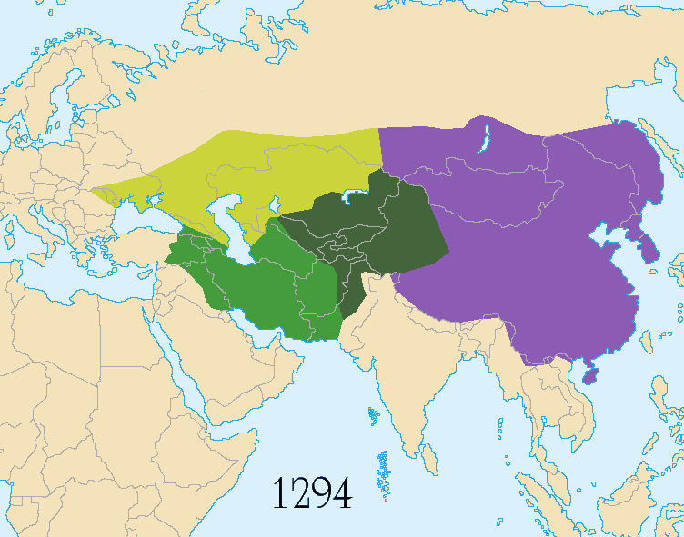
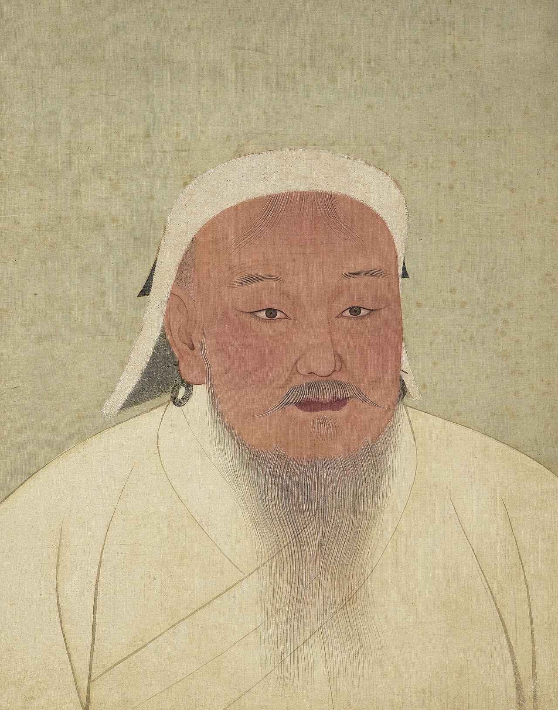
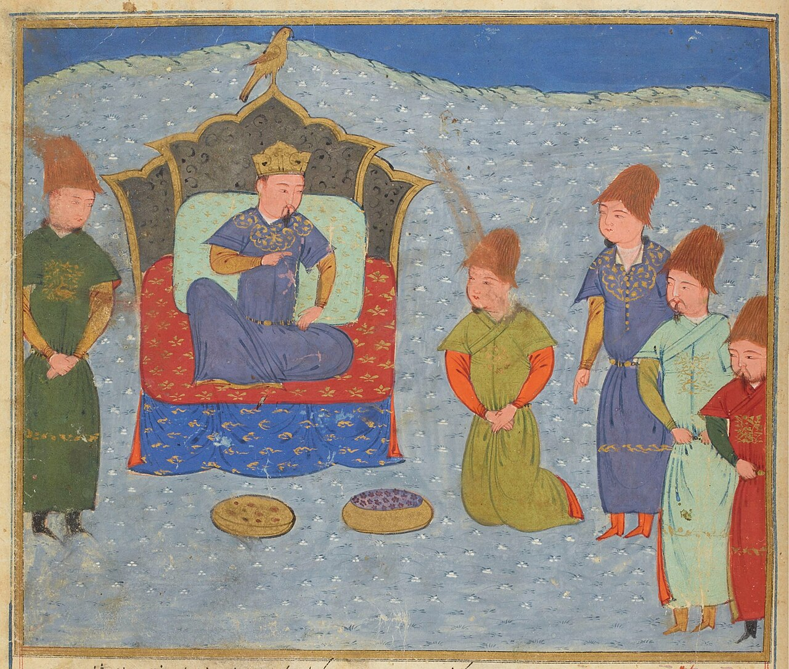
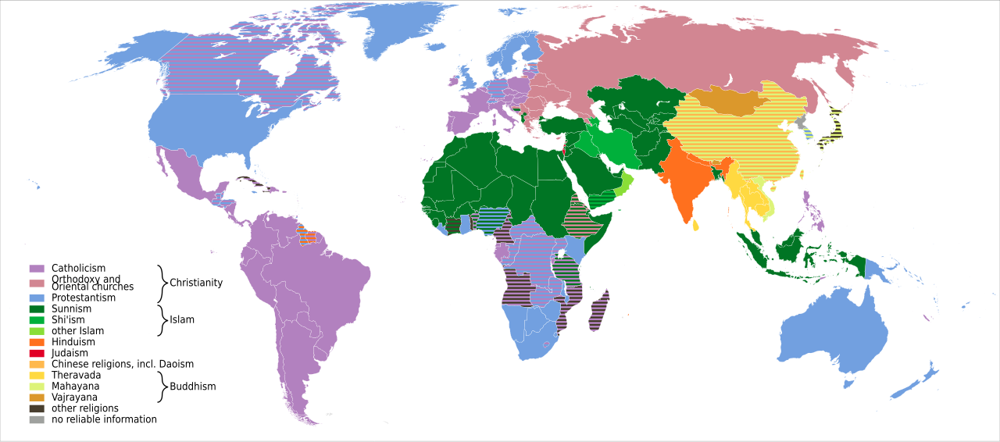

1. Το Μεγάλο Σταυροδρόμι: Από το Σπαθί του Νομάδα στο Πνεύμα των Θρησκειών
Στο δεύτερο μάθημα γνωρίσαμε τον αδυσώπητο κόσμο της ευρασιατικής στέπας: την εξημέρωση του αλόγου, τους Σκύθες ιπποτοξότες και την αιώνια διελκυστίνδα ανάμεσα στον ριζωμένο γεωργό και τον ελεύθερο νομάδα. Στο παρόν μάθημα, αυτή η νομαδική δύναμη φτάνει στην απόλυτη, ιστορική της κορύφωση: στην κοσμοκρατορία των Μογγόλων υπό τον Τζένγκις Χαν και στη θρυλική «Χρυσή Ορδή».
Ταυτόχρονα όμως, βρισκόμαστε μπροστά στο πιο καθοριστικό σταυροδρόμι ολόκληρου του κύκλου των 19 μαθημάτων. Γιατί ένα μάθημα που ξεκινά με τις σαρωτικές εκστρατείες των Μογγόλων καβαλάρηδων καταλήγει στη Θεωρία των Θρησκειών; Η απάντηση κρύβεται στην ίδια τη φύση της Pax Mongolica.

Όταν οι Μογγόλοι ένωσαν την Ευρασία από τη Βαλτική μέχρι τον Ειρηνικό Ωκεανό, δεν δημιούργησαν απλώς μια στρατιωτική ζώνη ασφαλείας. Δημιούργησαν ένα γιγάντιο πνευματικό εργαστήριο. Κάτω από την ίδια αυτοκρατορική ομπρέλα βρέθηκαν για πρώτη φορά Ορθόδοξοι Ρώσοι, Καθολικοί Ευρωπαίοι, Νεστοριανοί Χριστιανοί, Μουσουλμάνοι Σουνίτες και Σιίτες, Βουδιστές, Κομφουκιανοί σοφοί, Ταοϊστές και σαμάνοι!
Οι Μογγόλοι δεν είχαν ιερά βιβλία ούτε διάθεση να επιβάλουν τον δικό τους σαμανισμό. Αντίθετα, κάθισαν στην κορυφή του κόσμου και άκουγαν με περιέργεια τους εκπροσώπους όλων των θρησκειών να αναμετρώνται θεολογικά! Αυτή η πρωτοφανής συνάντηση ανοίγει διάπλατα την πόρτα για τα επόμενα 15 μαθήματα της Μαρίας Ευθυμίου, απαιτώντας να θέσουμε το θεμελιώδες ερώτημα: Τι είναι θρησκεία; Πώς γεννήθηκε η πίστη στον Θεό; Και πώς ταξινομούνται οι μεγάλες πνευματικές παραδόσεις του ανθρώπου;
2. Τζένγκις Χαν (Τέμουτζιν): Η Ανάδυση του Παγκόσμιου Κατακτητή
Η ιστορία του ανθρώπου που άλλαξε τον ρου της Ευρασίας ξεκίνησε με τον πιο ταπεινό και τραγικό τρόπο. Γύρω στο 1162, στις όχθες του ποταμού Ονόν στη βόρεια Μογγολία, γεννήθηκε ένα αγόρι που ονομάστηκε Τέμουτζιν (Temüjin), λέξη που στα μογγολικά σημαίνει «σιδεράς». Κατά τον θρύλο των χρονικογράφων, το βρέφος γεννήθηκε σφίγγοντας στη μικρή του γροθιά έναν μαύρο θρόμβο αίματος —οιωνός ότι επρόκειτο να κυβερνήσει τον κόσμο με το σπαθί.

Όταν ο Τέμουτζιν ήταν μόλις 9 ετών, ο πατέρας του, ο φύλαρχος Γεσουγκέι, δηλητηριάστηκε ύπουλα από τους Τατάρους. Η φυλή τους εγκατέλειψε τη μητέρα του, Χοελούν, και τα μικρά παιδιά της στην παγωμένη στέπα να πεθάνουν από την πείνα. Η οικογένεια επέζησε τρώγοντας άγριες ρίζες, μούρα και ποντίκια. Στα εφηβικά του χρόνια, ο Τέμουτζιν αιχμαλωτίστηκε από αντίπαλη φυλή φορώντας ξύλινο κλοιό στον λαιμό, δραπέτευσε με απαράμιλλο θάρρος, και λίγο αργότερα είδε τη νεαρή αγαπημένη του σύζυγο Μπόρτε να απάγεται από τους πολεμοχαρείς Μερκίτ.
Αυτή η αδυσώπητη σχολή επιβίωσης διαμόρφωσε έναν ηγέτη από ατσάλι. Συμμαχώντας με τον ισχυρό Χαν των Κεραϊτών Τογκρούλ και τον αδελφοποιτό του (άντα) Τζαμούκα, ο Τέμουτζιν απελευθέρωσε τη σύζυγό του και άρχισε σταδιακά να συνενώνει τις φατρίες. Όταν ο αριστοκράτης Τζαμούκα επέμεινε στην παραδοσιακή νομαδική ιεραρχία των ευγενών, ο Τέμουτζιν συγκρούστηκε μαζί του, υπερασπιζόμενος μια ριζοσπαστική ιδέα: την απόλυτη αξιοκρατία. Κάθε πολεμιστής, ανεξάρτητα από τη γέννησή του, μπορούσε να γίνει στρατηγός αν αποδείκνυε γενναιότητα και πίστη.
Το 1206, στις πηγές του ποταμού Ονόν, συνήλθε το ιστορικό Κουρουλτάι (η γενική συνέλευση όλων των νομαδικών φυλών). Υψώνοντας το λευκό λάβαρο με τις εννέα ουρές αλόγου (tugh), οι νομάδες ανακήρυξαν τον Τέμουτζιν σε Τζένγκις Χαν (Genghis Khan) —τον «Παγκόσμιο» ή «Ωκεάνιο Κυβερνήτη». Για πρώτη φορά στην ιστορία, οι διαρκώς αλληλοσπαρασσόμενες φυλές της Μογγολίας ενώθηκαν σε ένα ενιαίο, ακαταμάχητο έθνος.
3. Η Σαρωτική Στρατιωτική Μηχανή και η Κατάκτηση του Κόσμου
Πώς κατάφερε ένας λαός που δεν ξεπερνούσε το ένα εκατομμύριο ψυχές να κατακτήσει αυτοκρατορίες δεκάδων εκατομμυρίων κατοίκων στην Κίνα, στην Περσία και στη Ρωσία; Η μογγολική πολεμική μηχανή ήταν ένα θαύμα οργάνωσης, ψυχολογικού πολέμου και τεχνολογικής προσαρμοστικότητας.
Ταχύτητα και Εφοδιασμός
Ο στρατός ήταν οργανωμένος με αυστηρό δεκαδικό σύστημα: αρμπάν (10), τζουούν (100), μινγκάν (1.000) και τουμέν (10.000 άνδρες). Κάθε πολεμιστής είχε μαζί του 3 έως 5 άλογα. Όταν ένα άλογο κουραζόταν, ο ιππέας πηδούσε στη ράχη του επόμενου εν κινήσει, χωρίς να σταματήσει ο καλπασμός! Έτσι, ένα μογγολικό σώμα στρατού μπορούσε να καλύψει 100 έως 120 χιλιόμετρα την ημέρα, εμφανιζόμενο ξαφνικά πίσω από τις γραμμές του εχθρού εκεί που κανείς δεν το περίμενε.
«Το πρώτο τραπέζι πίστα» & το Σινικό Τείχος: Όπως σημειώνει χαρακτηριστικά η Μαρία Ευθυμίου, για τους νομάδες της στέπας η πλούσια Κίνα ήταν ανέκαθεν «το πρώτο τραπέζι πίστα» των επιδρομών. Και δεν έπαιζε ρόλο αν υπήρχε το Σινικό Τείχος: οι Μογγόλοι είτε το παρέκαμπταν από τις άκρες, είτε δωροδοκούσαν τους φρουρούς, είτε το υπερκέραζαν! Μέσα σε τέσσερις δεκαετίες κατέλαβαν ολόκληρη την κινεζική αυτοκρατορία.
Το Ταχυδρομικό Δίκτυο Yam και η Πάιζα (Paiza): Το νευρικό σύστημα της Ευρασίας. Σταθμοί ανά 40–50 χλμ. με ξεκούραστα άλογα και τροφή. Ο ταχυδρόμος που φορούσε στο στήθος την Πάιζα (την επίσημη μεταλλική πλακέτα του Χαν με την επιγραφή: «Όποιος αντισταθεί σε αυτόν τον απεσταλμένο, θα τιμωρηθεί με θάνατο») μπορούσε να καλύψει πάνω από 200 χλμ. την ημέρα, μεταφέροντας διαταγές από το Πεκίνο στον Βόλγα σε ελάχιστες εβδομάδες!
Η Μοναδική Χειμερινή Κατάκτηση της Ρωσίας: Όπως υπογραμμίζει η Μαρία Ευθυμίου: «Είναι κάτι το ανεπανάληπτο στην παγκόσμια ιστορία: το 1236–1240 η Ρωσία κατελήφθη από τη Χρυσή Ορδή... καταχείμωνο! Δεν έχει ξαναγίνει ποτέ! Ούτε ο Ναπολέων ούτε ο Χίτλερ δεν μπόρεσαν να νικήσουν τον ρωσικό χειμώνα — μόνο οι Μογγόλοι! Και γιατί; Διότι τα κοντόχοντρα άλογα της στέπας είχαν συνηθίσει στις πολικές θερμοκρασίες της Σιβηρίας, και τα παγωμένα ποτάμια της Ρωσίας έγιναν για τους Μογγόλους ιππείς λεωφόροι ταχείας κυκλοφορίας!».
Ψυχολογικός Πόλεμος: Απόλυτη Παράδοση ή Ολοκληρωτικός Αφανισμός
Ο Τζένγκις Χαν εφάρμοσε μια ψυχρά υπολογισμένη στρατηγική τρόμου. Αν μια πολιορκημένη πόλη άνοιγε αμέσως τις πύλες της και παραδιδόταν, ο πληθυσμός της σωζόταν: οι κάτοικοι πλήρωναν απλώς φόρο υποτελείας, ενώ οι έμποροι, οι τεχνίτες και οι λόγιοι εντάσσονταν στον αυτοκρατορικό μηχανισμό. Αν όμως η πόλη τολμούσε να αντισταθεί και να σκοτώσει έστω και έναν Μογγόλο πολεμιστή, ισοπεδωνόταν ολοσχερώς. Τα τείχη γκρεμίζονταν, τα κτίρια καίγονταν και ο πληθυσμός εκτελούνταν συστηματικά, ώστε οι ελάχιστοι επιζώντες να διαδώσουν τον απόλυτο τρόμο στις επόμενες πόλεις!
Η Πολιορκητική Τεχνολογία
Σε αντίθεση με άλλους νομάδες που σταματούσαν μπροστά στα τείχη των πόλεων, οι Μογγόλοι υπήρξαν ιδιοφυείς μαθητές. Στρατολόγησαν χιλιάδες Κινέζους και Πέρσες μηχανικούς, ενσωματώνοντας γιγάντιους πολιορκητικούς καταπέλτες (τρεμπουσέ), φλογοβόλα με νάφθα και κινεζικές βόμβες πυρίτιδας. Με αυτά τα όπλα, το 1258 ο εγγονός του Τζένγκις, ο Χουλαγκού Χαν, πολιόρκησε και κατέλαβε τη μυθική Βαγδάτη. Η πόλη παραδόθηκε στις φλόγες, τα νερά του Τίγρη βάφτηκαν μαύρα από το μελάνι των βιβλίων του Οίκου της Σοφίας (Bayt al-Hikma) και κόκκινα από το αίμα των κατοίκων, σηματοδοτώντας το οριστικό τέλος της Χρυσής Εποχής του Ισλάμ.
4. Η «Χρυσή Ορδή» (Κιπτσάκ Χαγανάτο) και ο Μπατού Χαν
Όταν ο Τζένγκις Χαν πέθανε το 1227, η αχανής αυτοκρατορία μοιράστηκε, σύμφωνα με το μογγολικό έθιμο, στους τέσσερις γιους του σε τέσσερα αυτόνομα χαγανάτα (Ουλούς), υπό την ανώτατη εποπτεία του Μεγάλου Χαν Ογκεντέι. Το δυτικότερο τμήμα —οι αχανείς στέπες βόρεια της Κασπίας και της Μαύρης Θάλασσας— δόθηκε στον πρωτότοκο γιο του, τον Τζότσι, και κληρονομήθηκε από τον γιο του, τον Μπατού Χαν (Batu Khan).

Το 1236, ο Μπατού Χαν, έχοντας δίπλα του τον κορυφαίο αρχιστράτηγο της παγκόσμιας ιστορίας, τον Σουμπουτάι, εξαπέλυσε τη Μεγάλη Δυτική Εκστρατεία με 150.000 πολεμιστές. Οι κατακερματισμένες ρωσικές ηγεμονίες του Ρως έπεσαν η μία μετά την άλλη σαν χάρτινοι πύργοι: το Ριαζάν, το Βλαντιμίρ, η Μόσχα, και τελικά το ιστορικό Κίεβο ισοπεδώθηκε ολοσχερώς τον Δεκέμβριο του 1240.
Την άνοιξη του 1241, ο μογγολικός στρατός διασπάστηκε σε δύο σαρωτικές λαβίδες που εισέβαλαν ταυτόχρονα στην καρδιά της Κεντρικής Ευρώπης:
- Μάχη της Λέγκνιτσα (9 Απριλίου 1241, Πολωνία): Ο μογγολικός βόρειος βραχίονας συνέτριψε τον ενωμένο στρατό των Πολωνών ευγενών, των Τσεχο-Μοραβών και των επίλεκτων Τευτόνων Ιπποτών και Ναϊτών. Το κομμένο κεφάλι του δούκα Ερρίκου του Ευσεβούς περιφέρθηκε στην άκρη ενός μογγολικού δόρατος!
- Μάχη του ποταμού Σάγιο / Μόχι (11 Απριλίου 1241, Ουγγαρία): Δύο μέρες αργότερα, ο Σουμπουτάι παγίδευσε και εκμηδένισε τον τεράστιο στρατό του βασιλιά της Ουγγαρίας Μπέλα Δ΄, καταλαμβάνοντας την Πέστη και φτάνοντας μέχρι τις ακτές της Αδριατικής.
Ο τρόμος παρέλυσε ολόκληρη τη χριστιανική Δύση. Οι αυτοκράτορες και οι πάπες έτρεμαν, καθώς κανένας ευρωπαϊκός στρατός δεν μπορούσε να αναχαιτίσει τους Μογγόλους. Και τότε συνέβη το απίστευτο: η Ευρώπη σώθηκε από μια καθαρή σύμπτωση!
Επιστρέφοντας από την Ευρώπη, ο Μπατού εγκαταστάθηκε μόνιμα στις εύφορες στέπες του κάτω Βόλγα και ίδρυσε την πρωτεύουσά του, το Σαράι (Sarai). Το κράτος του έμεινε στην ιστορία ως Κιπτσάκ Χαγανάτο ή, πιο λαϊκά, ως η «Χρυσή Ορδή» (Altan Orda) —ονομασία που προήλθε είτε από τη χρυσοποίκιλτη, πολυτελή βασιλική σκηνή του Μπατού, είτε από το παραδοσιακό σύστημα προσανατολισμού των στεπών όπου το χρυσό/κίτρινο χρώμα συμβόλιζε το κέντρο του κόσμου.
5. Ο «Ταρταρικός Ζυγός» και η Γέννηση του Τσαρικού Κράτους
Για δυόμιση σχεδόν αιώνες (1240–1480), η Ρωσία έζησε κάτω από τον λεγόμενο «Ταρταρικό Ζυγό». Οι Μογγόλοι (τους οποίους οι Ρώσοι αποκαλούσαν γενικά «Τατάρους») δεν εγκαταστάθηκαν μέσα στα πυκνά ρωσικά δάση· προτιμούσαν την ανοιχτή στέπα του Βόλγα. Επέβαλαν όμως ένα αδυσώπητο σύστημα υποτέλειας.
Κάθε Ρώσος πρίγκιπας, προκειμένου να κυβερνήσει την πόλη του, ήταν υποχρεωμένος να ταξιδέψει ταπεινωμένος στο Σαράι, να προσκυνήσει γονατιστός τον Χαν, να περάσει ανάμεσα από εξαγνιστικές φωτιές και να λάβει το επίσημο διάταγμα διορισμού: το περίφημο Γιάρλικ (Yarlyk). Αν κάποιος καθυστερούσε τους φόρους ή έδειχνε ανυπακοή, μια τιμωρητική μογγολική επιδρομή ισοπέδωνε την πόλη του.
Πώς η Μόσχα Έγινε Πρωτεύουσα
Πριν από τη μογγολική κατάκτηση, η Μόσχα ήταν ένα ασήμαντο, λασπωμένο ξύλινο φρούριο χαμένο στα δάση. Πώς αναδείχθηκε στην πανίσχυρη πρωτεύουσα της Ρωσίας; Χάρη στη συνεργασία της με τη Χρυσή Ορδή!
Ο πρίγκιπας της Μόσχας Ιβάν Α΄ (1325–1340), ο οποίος απέκτησε το χαρακτηριστικό προσωνύμιο «Καλιτά» (Kalita - «ο Σακουλάς»), κέρδισε την απόλυτη εμπιστοσύνη του Χαν Ουζμπέκ. Ο Χαν τού ανέθεσε το μονοπώλιο της συλλογής των φόρων από όλες τις υπόλοιπες ρωσικές ηγεμονίες! Ο Ιβάν Καλιτά συγκέντρωνε τους φόρους με αμείλικτη σκληρότητα, κρατούσε ένα σημαντικό ποσοστό στη «σακούλα» του, και με τα χρήματα αυτά εξαγόραζε γαίες, δωροδοκούσε αξιωματούχους στο Σαράι και μετέφερε την έδρα της Ρωσικής Ορθόδοξης Εκκλησίας στη Μόσχα!
- Αποκοπή από τη Δύση: Την ώρα που η Δυτική Ευρώπη βίωνε την Αναγέννηση, την τυπογραφία και την πρώιμη επιστημονική επανάσταση, η Ρωσία έμενε απομονωμένη, προσηλωμένη στην επιβίωση.
- Συγκεντρωτικός Αυταρχισμός: Οι Ρώσοι πρίγκιπες διδάχθηκαν τη διακυβέρνηση από τους Μογγόλους. Όταν ο Ιβάν Γ΄ αποτίναξε οριστικά τον ζυγό το 1480 στον ποταμό Ούγκρα, ο νέος «Τσάρος πασών των Ρωσιών» κυβερνούσε με τον ίδιο απόλυτο, αυταρχικό τρόπο όπως ο Χαν: κανένας ευγενής δεν είχε δικαιώματα απέναντι στο κράτος, και όλοι ήταν δούλοι του μονάρχη.
- Γλωσσικά Δάνεια: Δεκάδες καθημερινές ρωσικές λέξεις για το χρήμα και τη διοίκηση προέρχονται απευθείας από τα ταταρο-μογγολικά: dengi (χρήματα, από το μογγολικό tamga), tamozhnya (τελωνείο), yamshchik (ταχυδρόμος / αμαξάς, από το σύστημα Γιαμ), kazna (δημόσιο ταμείο).
6. Η Pax Mongolica ως Εργαστήριο Θρησκευτικής Συνύπαρξης
Το πιο εκπληκτικό χαρακτηριστικό της Χρυσής Ορδής και ολόκληρης της Μογγολικής Αυτοκρατορίας ήταν η πρωτοφανής θρησκευτική ανεξιθρησκία. Οι νομάδες πίστευαν στον Αιώνιο Μπλε Ουρανό (Τεγκρισμό) και θεωρούσαν ότι ο Θεός είναι ένας, αλλά εκδηλώνεται με διαφορετικές γλώσσες και προσευχές σε κάθε λαό.
Στη Ρωσία, η Χρυσή Ορδή προστάτευσε την Ορθόδοξη Εκκλησία! Με ειδικά φιρμάνια (yarlyks), οι Μογγόλοι Χάνοι απάλλαξαν όλα τα ορθόδοξα μοναστήρια και τους ιερείς από κάθε μορφή φόρου και στρατολόγησης, απειλώντας με θάνατο όποιον τολμούσε να προσβάλει τις χριστιανικές εκκλησίες! Ο μοναδικός όρος που έθεταν ήταν ένας: οι ιερείς να προσεύχονται στις λειτουργίες τους για τη μακροημέρευση και την υγεία του Χαν!
Σταδιακά, συνέβη το κλασικό ιστορικό παράδοξο των νομάδων: οι κατακτητές αφομοιώθηκαν θρησκευτικά από τους υπηκόους τους. Υπό τη βασιλεία του Οζμπέγκ Χαν (1313–1341), η Χρυσή Ορδή ασπάστηκε επίσημα το Ισλάμ, μετατρεπόμενη σε ένα ισχυρό μουσουλμανικό σουλτανάτο, χωρίς ωστόσο να καταργήσει την παραδοσιακή προστασία των χριστιανών υποτελών της.
7. Εισαγωγή στη Θεωρία των Θρησκειών: Γιατί Υπάρχει Θρησκεία;
Και τώρα, η ιστορική αφήγηση της Μαρίας Ευθυμίου περνά από το πεδίο των μαχών στο βαθύτερο φιλοσοφικό και ανθρωπολογικό ερώτημα: Τι είναι θρησκεία; Γιατί σε κάθε εποχή, σε κάθε ήπειρο και σε κάθε πολιτισμό, από τις πρωτόγονες φυλές της Αμαζονίας μέχρι τις υπερσύγχρονες μητροπόλεις, ο άνθρωπος δημιουργεί θεούς;
Η απάντηση ξεκινά από μια θεμελιώδη βιολογική και ψυχολογική διαφορά του ανθρώπου από όλα τα υπόλοιπα όντα της φύσης: ο άνθρωπος είναι το μοναδικό ον στον πλανήτη που γνωρίζει με απόλυτη βεβαιότητα ότι κάποια μέρα θα πεθάνει.
Σύμφωνα με την ιστορική και ανθρωπολογική ανάλυση, η θρησκεία επιτελεί τρεις θεμελιώδεις λειτουργίες στην ανθρώπινη κοινωνία:
- Η Εξηγητική / Κοσμογονική Λειτουργία: Πριν από την ανάπτυξη της σύγχρονης επιστήμης, η θρησκεία ήταν η μόνη θεωρία για τον κόσμο. Απαντούσε στα αγωνιώδη ερωτήματα: «Ποιος έφτιαξε τον ήλιο και τα αστέρια; Γιατί αστράφτει; Γιατί αρρωσταίνουμε; Από πού ήρθαμε;».
- Η Ψυχολογική / Παρηγορητική Λειτουργία: Παρέχει καταφύγιο στον αφόρητο πόνο της απώλειας και του πένθους. Δίνει ελπίδα ότι ο αγαπημένος που χάθηκε ζει σε έναν καλύτερο κόσμο, και ότι οι αδικίες της επίγειας ζωής θα αποκατασταθούν σε μια μεταθανάτια δικαιοσύνη.
- Η Κοινωνική / Συνεκτική Λειτουργία: Επιβάλλει κανόνες ηθικής συμπεριφοράς με θεϊκή αυθεντία («Ου κλέψεις», «Ου φονεύσεις»). Επιτρέπει σε εκατομμύρια άγνωστους μεταξύ τους ανθρώπους να συνεργάζονται ειρηνικά και να υπακούουν σε νόμους επειδή μοιράζονται τους ίδιους ιερούς μύθους.
8. Η Εξέλιξη της Θρησκευτικότητας: Ανιμισμός, Πολυθεϊσμός, Μονοθεϊσμός
Η θρησκευτική συνείδηση της ανθρωπότητας δεν γεννήθηκε έτοιμη. Ακολούθησε μια συναρπαστική εξελικτική πορεία τριών μεγάλων σταδίων, σε άμεση συνάρτηση με την τεχνολογική και κοινωνική εξέλιξη:
1ο Στάδιο: Ανιμισμός (Παλαιολιθική Εποχή)
Όταν ο άνθρωπος ζούσε ως τροφοσυλλέκτης και κυνηγός μέσα στη φύση, πίστευε ότι όλα τα στοιχεία του κόσμου είναι έμψυχα (anima). Κάθε δέντρο, ρυάκι, βράχος, άνεμος και ζώο είχε το δικό του πνεύμα. Ο άνθρωπος δεν θεωρούσε τον εαυτό του ανώτερο από τα ζώα· ένιωθε αδελφός τους. Πριν σκοτώσει ένα ελάφι, ο κυνηγός ζητούσε συγγνώμη από το πνεύμα του ζώου, εξηγώντας ότι το κάνει μόνο για να ταΐσει τα παιδιά του.
2ο Στάδιο: Πολυθεϊσμός (Αγροτικοί & Ποτάμιοι Πολιτισμοί)
Με τη Γεωργική Επανάσταση, ο άνθρωπος υποδούλωσε τα ζώα και ημέρεψε τη γη. Η φύση έπαψε να είναι ισότιμη αδελφή και έγινε αντικείμενο εκμετάλλευσης. Τότε γεννήθηκε ο Πολυθεϊσμός: οι φυσικές δυνάμεις προσωποποιήθηκαν σε ανθρωπόμορφους θεούς (θεός της βροχής, θεά της γονιμότητας, θεός του ήλιου, θεός του πολέμου).
Η σχέση του ανθρώπου με τους πολυθεϊστικούς θεούς ήταν καθαρά συναλλακτική («Do ut des» - Δίδω ίνα δως): «Σου θυσιάζω ένα πρόβατο για να μου στείλεις βροχή». Οι θεοί δεν ήταν πρότυπα ηθικής τελειότητας· είχαν ανθρώπινα πάθη, ζήλιες, έχθρες και ελαττώματα (όπως οι θεοί του Ολύμπου ή της Μεσοποταμίας).
Το Χειμερινό Ηλιοστάσιο & η Γέννηση του «Ανίκητου Ηλίου»: Στον αγροτικό πολυθεϊσμό της Ευρασίας, η πιο κρίσιμη στιγμή της χρονιάς ήταν η 21η–22α Δεκεμβρίου: η μεγαλύτερη νύχτα του χρόνου. Μετά το χειμερινό ηλιοστάσιο, η ημέρα αρχίζει να μεγαλώνει —ο Ήλιος «ξαναγεννιέται» στις 25 Δεκεμβρίου (Sol Invictus / Ανίκητος Ήλιος). Όπως εξηγεί η Μαρία Ευθυμίου, ο πρώιμος Χριστιανισμός βάπτισε αυτή την πανάρχαια αγροτική γιορτή του φωτός, ορίζοντας στις 25 Δεκεμβρίου τη γέννηση του Χριστού ως του πνευματικού «Ηλίου της Δικαιοσύνης»!
3ο Στάδιο: Μονοθεϊσμός και Σωτηριολογικές Θρησκείες
Καθώς οι κοινωνίες εξελίχθηκαν και οι πόλεις ενώθηκαν σε μεγάλες αυτοκρατορίες, οι τοπικοί πολυθεϊστικοί θεοί δεν επαρκούσαν πλέον. Γεννήθηκε η ιδέα ενός Ενιαίου, Υπερβατικού Θεού, δημιουργού του σύμπαντος και ηθικού νομοθέτη. Η θρησκεία μεταμορφώθηκε: έπαψε να είναι μια μηχανική εξωτερική ανταλλαγή θυσιών και έγινε εσωτερική ηθική στάση, μετάνοια, αγάπη και αναζήτηση της αιώνιας σωτηρίας της ψυχής.
9. Η «Αξονική Εποχή» (Achsenzeit, 800–200 π.Χ. - Karl Jaspers)
Στο κέντρο αυτής της πνευματικής μεταμόρφωσης δεσπόζει ένα από τα πιο συγκλονιστικά φαινόμενα στην παγκόσμια ιστορία: η «Αξονική Εποχή» (Achsenzeit / Axial Age), έννοια που εισήγαγε ο κορυφαίος Γερμανός φιλόσοφος Karl Jaspers.
Μεταξύ του 800 και του 200 π.Χ. —και με επίκεντρο τον 6ο και 5ο αιώνα π.Χ.— εντελώς ανεξάρτητα και ταυτόχρονα σε τέσσερα διαφορετικά γεωγραφικά σημεία της Ευρασίας, συντελέστηκε μια παράλληλη πνευματική έκρηξη που γέννησε όλα τα θεμέλια της σύγχρονης ανθρώπινης σκέψης!

Κοιτάξτε τις τέσσερις αυτές κοιτίδες που άναψαν ταυτόχρονα σαν φωτεινοί φάροι:
- Στην Ελλάδα: Οι Προσωκρατικοί, ο Σωκράτης, ο Πλάτων και ο Αριστοτέλης εγκαταλείπουν τους παλιούς μύθους και θεμελιώνουν τον ορθολογισμό, τη φιλοσοφία, την επιστήμη και την πολιτική θεωρία.
- Στο Ισραήλ & στην Περσία: Οι μεγάλοι προφήτες (Ησαΐας, Ιερεμίας, Ιεζεκιήλ) κηρύττουν ότι ο Θεός δεν θέλει καμένα κρέατα και θυσίες, αλλά κοινωνική δικαιοσύνη, προστασία του ορφανού και της χήρας. Στην Περσία, ο Ζαρατούστρα θεμελιώνει τον κοσμικό αγώνα του Καλού ενάντια στο Κακό και την ελεύθερη βούληση.
- Στην Ινδία: Ο Σιντάρτα Γκαουτάμα (Βούδας) και ο Μαχαβίρα (Τζαϊνισμός) απορρίπτουν τις αιματηρές θυσίες των Βεδών και τις άκαμπτες κάστες, διδάσκοντας την απόλυτη μη-βία (Αχίμσα), τον διαλογισμό και τη λύτρωση από τον πόνο (Νιρβάνα).
- Στην Κίνα: Μέσα στη δίνη των Εμπόλεμων Κρατών, ο Κομφούκιος διδάσκει την ηθική της ευγένειας, την κοινωνική αρμονία και τον σεβασμό, ενώ ο Λάο Τσε συγγράφει το Τάο Τε Τσινγκ, διδάσκοντας την ταπεινότητα και τη ροή με τη φύση.
10. Η Μεγάλη Ταξινόμηση: Οι Τέσσερις Ποταμοί της Πίστης
Όλες οι μεγάλες ιστορικές θρησκείες που κυριαρχούν σήμερα στη γήινη σφαίρα μπορούν να ταξινομηθούν σε τέσσερις θεμελιώδεις οικογένειες, καθεμία με τη δική της ξεχωριστή κοσμοθεωρία, αντίληψη του χρόνου και πνευματικό στόχο:
- Οι Ινδικές (Νταρμικές) Θρησκείες (Ινδουισμός, Βουδισμός, Τζαϊνισμός, Σιχισμός):
- Αντίληψη Χρόνου: Κυκλικός. Ο κόσμος δεν δημιουργείται άπαξ, αλλά γεννιέται, ακμάζει, καταστρέφεται και αναγεννάται σε αιώνιους κοσμικούς κύκλους (Kalpas).
- Κεντρικές Έννοιες: Σαμσάρα (ο ατέρμονος κύκλος των μετενσαρκώσεων), Κάρμα (ο αλάθητος ηθικός νόμος αιτίας και αποτελέσματος: ό,τι σπέρνεις, θερίζεις), Ντάρμα (το κοσμικό και ηθικό καθήκον).
- Τελικός Στόχος: Η Μόκσα (λύτρωση) ή Νιρβάνα —το σπάσιμο της αλυσίδας των γεννήσεων και η ένωση με το Απόλυτο.
- Ηθική Αρχή: Αχίμσα (απόλυτη μη-βία και σεβασμός σε κάθε μορφή ζωής).
- Οι Παραδόσεις της Άπω Ανατολής (Κομφουκιανισμός & Ταοϊσμός):
- Χαρακτήρας: Πρακτική φιλοσοφία και κοσμική αρμονία. Δεν επικεντρώνονται σε έναν προσωπικό Θεό-δημιουργό ούτε σε μεταθανάτια σωτηρία.
- Κομφουκιανισμός: Ηθική της ευγένειας (Ren), σεβασμός στους γονείς και στους προγόνους (Xiao), σωστή διακυβέρνηση και κοινωνική ευταξία.
- Ταοϊσμός: Το Τάο (ο ανείπωτος Δρόμος της φύσης), η ισορροπία των αντίθετων συμπληρωματικών δυνάμεων Γιν και Γιανγκ, και η αρχή του Γου-Γουέι (η αρμονική δράση χωρίς βία και πίεση).
- Ο Περσικός Δυϊσμός (Ζωροαστρισμός / Μαζδαϊσμός):
- Κοσμοθεωρία: Απόλυτος Ηθικός Δυϊσμός. Το σύμπαν είναι ένα πεδίο μάχης ανάμεσα στον Αχούρα Μάζντα (Θεό του Φωτός, της Σοφίας και της Αλήθειας) και στον Αχριμάν (το Πνεύμα του Σκότους, του Ψεύδους και της Καταστροφής).
- Ελεύθερη Βούληση: Ο άνθρωπος δεν είναι πιόνι· καλείται καθημερινά να επιλέξει πλευρά μέσα από «Καλές Σκέψεις, Καλά Λόγια, Καλές Πράξεις» (Humata, Hukhta, Huvarshta).
- Ιστορική Γέφυρα: Ο Ζωροαστρισμός εισήγαγε πρώτος την ιδέα της Τελικής Κρίσης, του Παραδείσου, της Κόλασης και της ανάστασης των νεκρών, έννοιες που επηρέασαν βαθύτατα τον Ιουδαϊσμό, τον Χριστιανισμό και το Ισλάμ.
- Οι Αβρααμικές Μονοθεϊστικές Θρησκείες (Ιουδαϊσμός, Χριστιανισμός, Ισλάμ):
- Αντίληψη Χρόνου: Γραμμικός & Ιστορικός. Ο χρόνος ξεκινά με τη Δημιουργία, προχωρά προς τα εμπρός μέσα από ιστορικά γεγονότα, και ολοκληρώνεται στην Ημέρα της Κρίσεως.
- Προσωπικός Θεός: Ένας μοναδικός, πάνσοφος, παντοδύναμος Θεός που αποκαλύπτεται στον άνθρωπο μέσω Προφητών και Ιερών Κειμένων.
- Διαθήκη & Σωτηρία: Ο Θεός συνάπτει Διαθήκη με τον λαό Του. Η σωτηρία της ψυχής επιτυγχάνεται μέσα από την πίστη, την υπακοή στις θείες εντολές, τη μετάνοια και τη θεία χάρη.
11. Ετυμολογικό Εργαστήρι: Οι Λέξεις της Πίστης και της Εξουσίας
- Θρησκεία: Προέρχεται από το αρχαίο ελληνικό ρήμα θρησκεύω και το επίθετο θρῆσκος, που σήμαινε τον ευσεβή, εκείνον που εκτελεί με απόλυτη ακρίβεια και ευλάβεια τα ιερά καθήκοντα. Συνδέεται ετυμολογικά με το ρήμα θρέομαι (ψιθυρίζω, απαγγέλλω χαμηλόφωνα ιερές προσευχές).
- Religio (Religion): Η λατινική λέξη για τη θρησκεία διχάζει τους αρχαίους γραμματικούς με δύο υπέροχες ερμηνείες: Ο Κικέρων την παρήγαγε από το re-legere (ξαναδιαβάζω προσεκτικά, μελετώ με ευλάβεια), ενώ ο χριστιανός απολογητής Λακτάντιος από το re-ligare (επανασυνδέω, ξαναδένω τον άνθρωπο με τον Θεό).
- Χαν & Χαγάνος (Khan / Khagan): Τουρκο-μογγολικός τίτλος ανώτατης ηγεσίας. Ο Χαν ήταν ο ηγεμόνας μιας φυλής ή ενός κράτους, ενώ ο Χαγάνος (Khagan = «Χαν των Χαν») ήταν ο αυτοκράτορας, ο επικυρίαρχος όλων των φυλών.
- Ουλούς (Ulus): Στα αρχαία μογγολικά σήμαινε κυριολεκτικά «ο λαός που ζει κάτω από τις σκηνές», και κατέληξε να σημαίνει «κρατική επικράτεια, έθνος ή χαγανάτο».
- Οι Παγανιστικοί Θεοί στις Ημέρες της Εβδομάδας: Ενώ στα ελληνικά οι ημέρες έχουν αριθμητικά ή χριστιανικά ονόματα (Δευτέρα, Τρίτη, Κυριακή), στα αγγλικά και τις γερμανικές γλώσσες διατηρούνται ολοζώντανοι οι θεοί του παγανιστικού πάνθεον: Tuesday (ημέρα του θεού Tyr), Wednesday (Woden's Day — η ημέρα του Όντιν), Thursday (Thor's Day — η ημέρα του Θωρ), Friday (ημέρα της θεάς Φρέγια)!